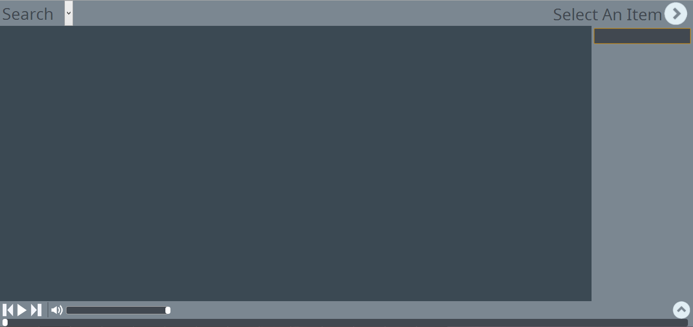
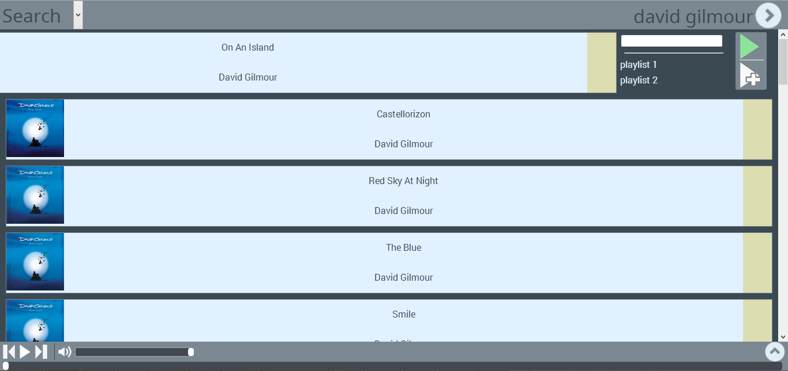
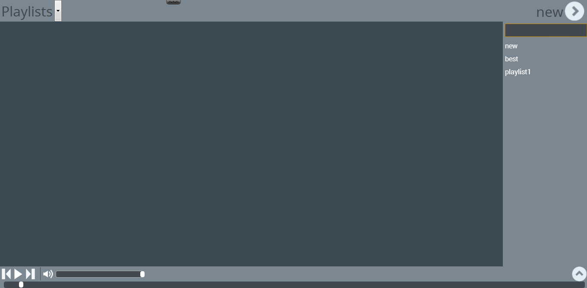
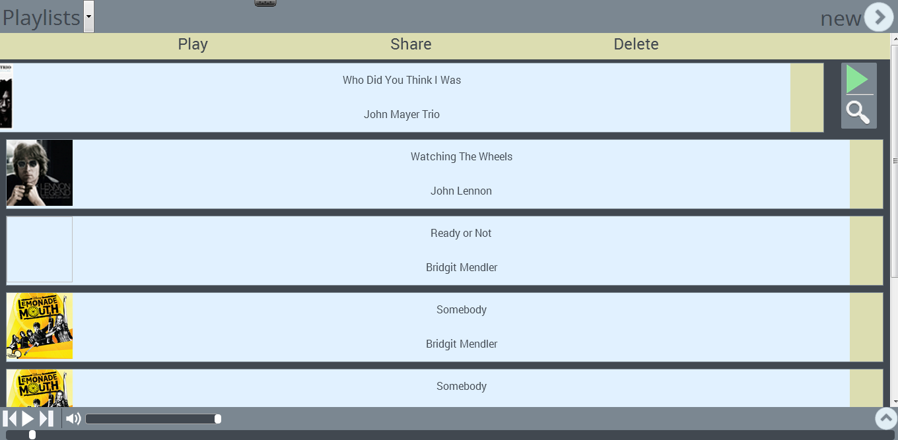
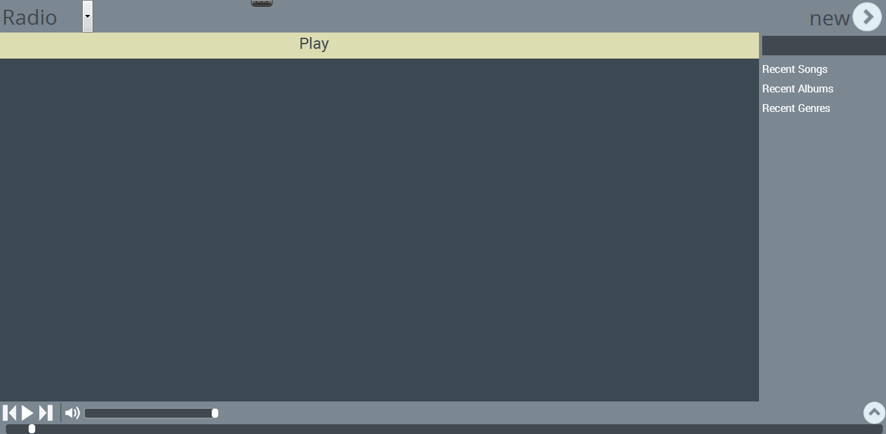
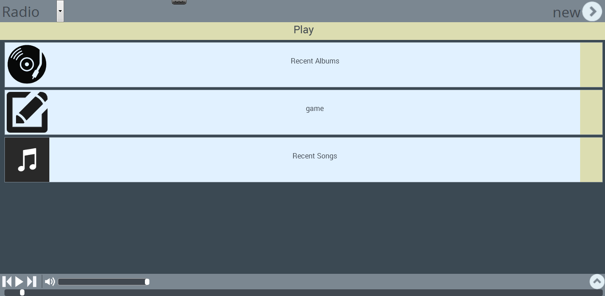
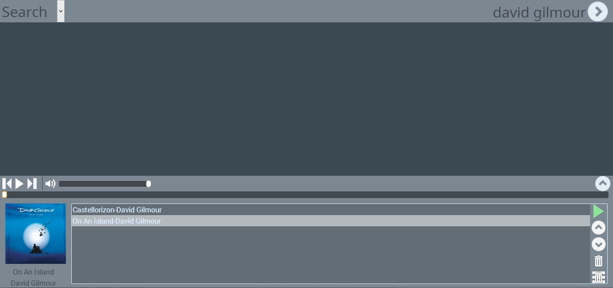

Fig 1.1
In order to access the Search section, select the Search option from the top left drop-down list.
- Open the item list by selecting from the top right side of the screen. (see Fig 1.1)
- Type the desired query in the input box.
- A new search session based on the provided input is added in the item list and displayed.
- Open the item list by selecting from the top right side of the screen. (see Fig 1.1)
- Select the desired search session from the item list.
- A list containing songs will be displayed

Fig 2.1
- Drag the yellow element located in the right side of the song container to the left in order to open the song options menu.
- A list of available song options will be displayed.
- Select from the song options menu. (see Fig 1.2)
- The selected song will be added to the now playing list and playback will automatically begin.
- In the song options menu a drop-down list containing the existing playlists and the option to create a new one are displayed. (see Fig 1.2)
- Type the name of a new playlist in which to add the song or alternatively add the song to an existing one.
- Select from the song options menu. (see Fig 1.2)
- The selected song will be added to the now playing list.

Fig 2.1
In order to access the Playlist section, select the Playlist option from the top left drop-down list.
- Open the item menu by clicking on the arrow from the upper-right corner of the page. (see Fig 2.1)
- Provide name input for the new playlist by typing it in the text box.
- A new playlist will be created with the specified name and added to the item list.
- Open the item menu by clicking on the arrow from the upper-right corner of the page. (see Fig 2.1)
- The playlists can be viewed by selecting them from the item list.
- The songs from the selected playlist will be displayed in the main content of the page.

Fig 2.2
- On selecting the playlist from the item list, a menu is displayed on the top part of the page.
- The top menu contains Play, Share and Delete options.
- Select the Play button from the menu.
- The songs from the playlist will automatically start playing.
- On selecting the playlist from the item list, a menu is displayed on the top part of the page. (see Fig 2.2)
- The top menu contains Play, Share and Delete options.
- Select the Share button from the menu.
- Share the current playlist on Facebook, Twitter or Google+.
- On choosing the Share option, a new window is displayed in which the user can login to one of the previously mentioned social media websites and share the playlist.
- On selecting the playlist from the item list, a menu is displayed on the top part of the page. (see Fig 2.2)
- The top menu contains Play, Share and Delete options.
- Select the Delete button from the menu.
- The current playlist will be deleted.
- Drag the yellow element located on the right side of the song container to the left in order to open the song menu. (see Fig 2.2)
- Press the icon and the selected song will start playing.
- Drag the yellow element located on the right side of the song container to the left in order to open the song menu. (see Fig 2.2)
- On pressing the icon, the user will be redirected to the Search section with the selected song name and artist as input for the search action.
- Drag the yellow element located on the right side of the song container to the left until the song container disappears from the page,
removing the song from the playlist.

Fig 3.1
In order to access the Radio section, select the Radio option from the top left drop-down list.

Fig 3.2
- Open the item menu by clicking on the arrow from the upper-right corner of the page. (see Fig 3.1)
- The item menu contains a text box and three default criteria for the radio: Recent Songs, Recent Albums and Recent Genres.
- The user can select one or more default criteria that will be added to the main content and removed from the item list. (see Fig 3.2)
- Open the item menu by clicking on the arrow from the upper-right corner of the page. (see Fig 3.1)
- The item menu contains a text box and three default criteria for the radio: Recent Songs, Recent Albums and Recent Genres
- Provide input for the text box in order to add a custom search criterion and it will be added to the main content. (see Fig 3.2)
- Click on the Play button on the top of the section and the songs will be generated. (see Fig 3.2)
- Drag the yellow element located on the right side of the criterion container to the left until the criterion container disappears from the page,
removing it from the main content and adding it back to the item list.

Fig 4.1
The music player displays the list of currently playing songs and can be viewed by selecting from the bottom right.
- Select a song from the music player.
- From the right side of the playback container select or in order to move the song to the desired position. (see Fig 4.1)
- Select a song from the music player.
- From the right side of the playback container select in order to remove the song from the now playing list. (see Fig 4.1)
- From the right side of the playback container select in order to remove all the songs from the now playing list. (see Fig 4.1)
{kind=link}
{kind=link}
{kind=link}
{kind=link}
{kind=link}
{kind=link}
{kind=link}